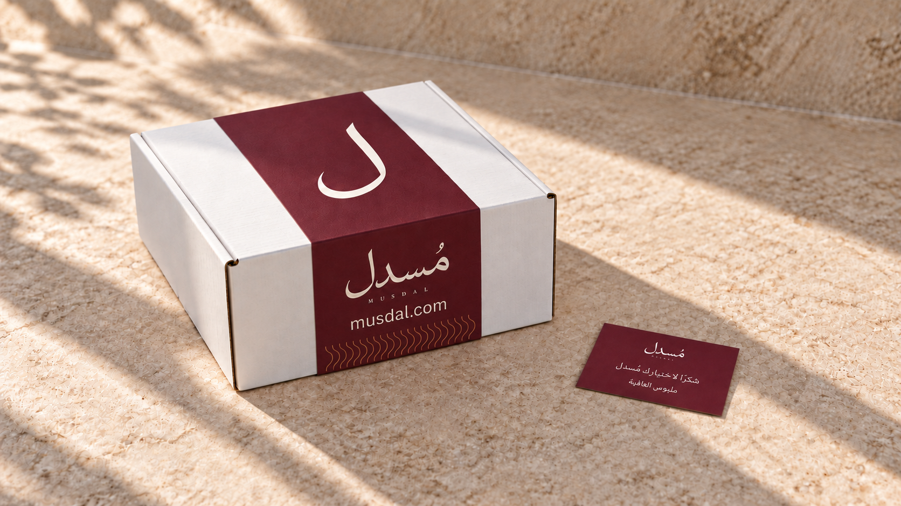
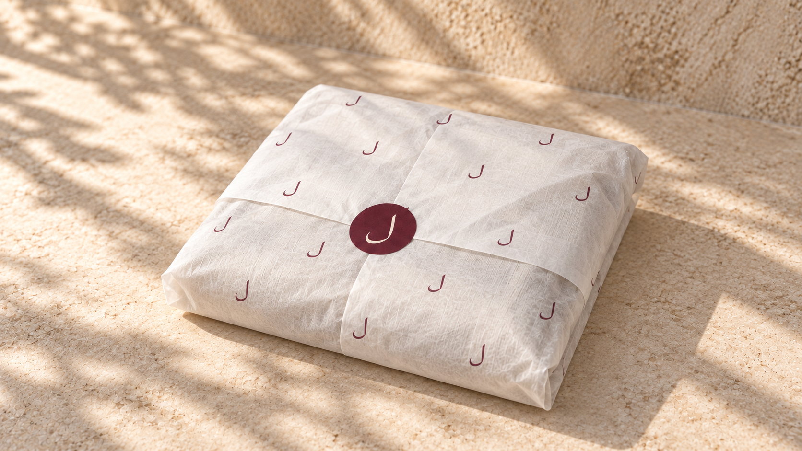

نعتمدها.
صورة صورة.
الصندوق المسكّر والقفل البورغندي معتمدان كما اختارهما المستخدم، والورقة الداخلية وبطاقة الشكر معتمدتان أيضًا. هذه الصفحة تفصل الصندوق، التغليف الداخلي، وبطاقة الشكر الصغيرة حتى يكون القرار واضحًا لكل عنصر.
مقاس صندوق الثياب المستهدف 30 × 30 سم حسب ترجيح المستخدم. مرجع المورد المطابق 30 × 30 × 10 سم؛ تُثبت القياسات الداخلية وارتفاع الصندوق بعينة قبل إعداد قالب السليف. مرجع صندوق 30 × 30 × 10 سم ↗
01 · الصندوق المسكّر
الصندوق الأبيض الجاهز والقفل الورقي البورغندي بنفس العرض والمكان المعتمدين. البطاقة المجاورة مصغّرة لإظهار النسبة المقترحة.


02 · التغليف الداخلي
القطعة ملفوفة بورقة خفيفة شبه شفافة، بلام بورغندي متباعدة، ومغلقة بليبل دائري يحمل اللام. المرجع هو الورقة الظاهرة في المعاينة السابقة.


03 · بطاقة الشكر الصغيرة
التصميم معتمد بمقاس مرجعي 9 × 5.5 سم، مثل بطاقة العمل؛ قياسات الإنتاج تُثبت بالعينة. وجه بورغندي وشعار أوف وايت، مع «شكرًا لاختيارك مُسدل» و«ملبوس العافية».


04 · المصادر والمراجع.
- المستخدم · 9 أكتوبر 2026: اعتماد الصندوق المقفل والقفل البورغندي في الصورة المختارة، وتصغير البطاقة وفصل الصور حسب المكوّن.
- مرجع الورقة الخفيفة وباترن اللام السابق · أصل السليف المعتمد.
- Falcon Pack · مرجع الصندوق: الخيار المحدد 20 × 20 × 10 سم، أبيض خارجيًا وكرافت داخليًا، بغطاء متصل وألسنة جانبية.
- الصور مولّدة باستخدام ImageGen للمراجعة البصرية. أصل البطاقة المتجهي يحمل النص والشعار بدقة؛ المقاس 90 × 55 مم مقترح. مقاسات القوالب والورقة النهائية تُثبت بعينة فعلية قبل الطباعة. بيانات الصور.